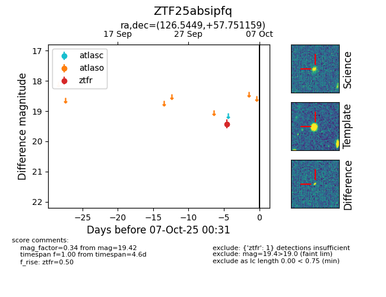

FINK: ZTF25absipfq
Lasair: ZTF25absipfq
ALeRCE: ZTF25absipfq
ZTF25absipfq (ztf,fink)
equatorial (ra, dec) = (126.5449,+57.75116)
galactic (l, b) = (159.6578,+35.19881)

last ztfr=19.42
1 ztfr detections